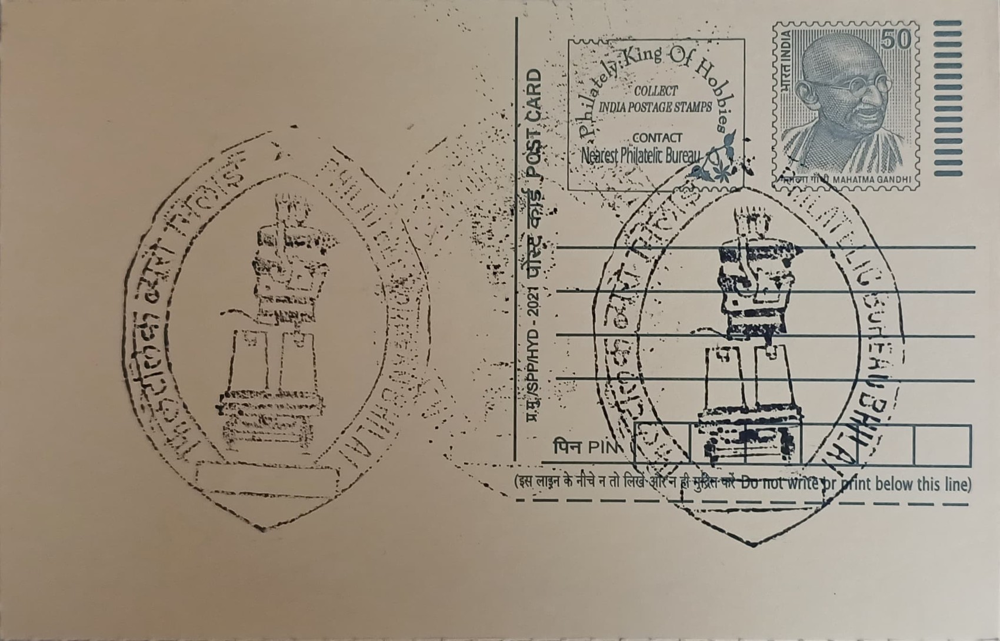

Steel Ladle
स्टील कलछुल


The steel ladle featured on this cancellation is a working emblem of Bhilai Steel Plant rather than a literal artefact tied to a founding legend, standing in for the vessel used to carry molten metal through the steelmaking process at the heart of Durg district's industrial economy. Before the plant's arrival, Bhilai was a modest village amid the forests and villages of central Chhattisgarh; its transformation began on 2 February 1955, when the Government of India and the Union of Soviet Socialist Republics signed the bilateral agreement to construct an integrated steel works there, a decision reportedly influenced by Jawaharlal Nehru's visit to the Soviet steel city of Magnitogorsk. The plant's first blast furnace was lit in 1959, an event presided over by President Rajendra Prasad and widely regarded as the effective birth date of industrial Bhilai.
Bhilai Steel Plant belongs to the category of large public sector integrated steel works and holds particular significance as one of independent India's earliest and most prominent symbols of planned heavy industrialisation under the Second Five-Year Plan. It was among the first of three major steel plants built with foreign collaboration in this period, and its Soviet partnership made it a flagship of Indo-Soviet technical cooperation at a time when India sought industrial self-reliance without binding itself to either Cold War bloc. Today it operates as a unit of the Steel Authority of India Limited (SAIL) and is distinguished as the country's principal, and for long periods sole, domestic producer of rails for Indian Railways, giving it outsized importance to national transport infrastructure well beyond its home state.
Construction of the plant proceeded through the later 1950s with Soviet technical expertise, equipment, and financing reported at roughly 132 million dollars, and it has been expanded and modernised repeatedly in the decades since, including a major SAIL-approved modernisation and expansion programme costing over eleven thousand crore rupees. The plant's saleable steel capacity has grown to more than three million tonnes annually, produced through blast furnaces, steel melting shops, and secondary refining units such as ladle furnaces, vacuum arc degassers, and RH degassers that use ladles like the one depicted to move and treat molten steel before it is cast and rolled into finished products including plates, structural sections, and rails.
A defining achievement associated with the plant is its Universal Rail Mill, which in 2016 began rolling the world's longest single-piece rails at 130 metres in length, later welded into panels up to 260 metres long to reduce the number of joints in track and improve safety and ride quality on Indian Railways lines; Bhilai remains India's sole domestic source of these long rails. The plant's growth also reshaped the surrounding landscape, giving rise to a purpose-built steel township organised into numbered residential sectors, each historically designed to be largely self-contained with its own schools, markets, and health facilities for the workforce that at its peak numbered close to sixty thousand employees.
Employee welfare in the township has long centred on institutions such as the Sector 9 Hospital and the larger Jawaharlal Nehru Hospital and Research Centre, an 860-bed facility built to serve plant workers and their families alongside subsidised housing and education benefits typical of India's public sector steel townships. The plant continues to operate under SAIL's ongoing modernisation and capacity-expansion plans aimed at lifting the company's overall crude steel output toward 35 million tonnes by 2030, keeping Bhilai central to that effort even as automation has reduced its direct workforce from historical peaks. The postal cancellation's steel ladle motif thus points not to a monument in the conventional sense but to a still-functioning industrial complex whose output continues to run under the rails of the national railway network it helped build.
| Date of Introduction | February 3, 1984 |
|---|---|
| Address | Sub Postmaster, |
| Civic Centre, Bhilai SO, | |
| Durg (dt.), Chhattisgarh - 490006. |